Sine, Cosine and Tangent in Four Quadrants
Sine, Cosine and Tangent
The three main functions in trigonometry are Sine, Cosine and Tangent.

They are easy to calculate:
Divide the length of one side of a
right angled triangle by another side
... but we must know which sides!
For an angle θ, the functions are calculated this way:
|
Sine Function: |
sin(θ) = Opposite / Hypotenuse |
|
Cosine Function: |
cos(θ) = Adjacent / Hypotenuse |
|
Tangent Function: |
tan(θ) = Opposite / Adjacent |
Example: What is the sine of 35°?
 |
Using this triangle (lengths are only to one decimal place): sin(35°) = Opposite / Hypotenuse = 2.8/4.9 = 0.57... |
Cartesian Coordinates
Using Cartesian Coordinates we mark a point on a graph by how far along and how far up it is:

The point (12,5) is 12 units along, and 5 units up.
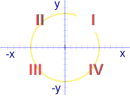
Four Quadrants
When we include negative values, the x and y axes divide the space up into 4 pieces:
Quadrants I, II, III and IV
(They are numbered in a counter-clockwise direction)
- In Quadrant I both x and y are positive,
- in Quadrant II x is negative (y is still positive),
- in Quadrant III both x and y are negative, and
- in Quadrant IV x is positive again, and y is negative.
Like this:
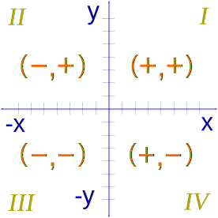
| Quadrant | X (horizontal) |
Y (vertical) |
Example |
|---|---|---|---|
| I | Positive | Positive | (3,2) |
| II | Negative | Positive | (−5,4) |
| III | Negative | Negative | (−2,−1) |
| IV | Positive | Negative | (4,−3) |
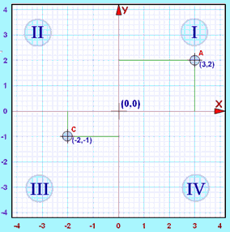
Example: The point "C" (−2,−1) is 2 units along in the negative direction, and 1 unit down (i.e. negative direction).
Both x and y are negative, so that point is in "Quadrant III"
Reference Angle
Angles can be more than 90º
But we can bring them back below 90º using the x-axis as the reference.
Think "reference" means "refer x"
The simplest method is to do a sketch!
Example: 160º
Start at the positive x axis and rotate 160º
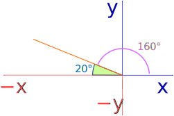
Then find the angle to the nearest part of the x-axis,
in this case 20º
The reference angle for 160º is 20º
Here we see four examples with a reference angle of 30º:
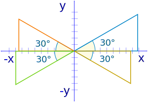
Instead of a sketch you can use these rules:
| Quadrant | Reference Angle |
| I | θ |
| II | 180º − θ |
| III | θ − 180º |
| IV | 360º − θ |
Sine, Cosine and Tangent in the Four Quadrants
Now let us look at the details of a 30° right triangle in each of the 4 Quadrants.
In Quadrant I everything is normal, and Sine, Cosine and Tangent are all positive:
Example: The sine, cosine and tangent of 30°
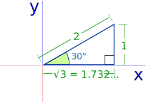
|
Sine |
sin(30°) = 1 / 2 = 0.5 |
|
Cosine |
cos(30°) = 1.732 / 2 = 0.866 |
|
Tangent |
tan(30°) = 1 / 1.732 = 0.577 |
But in Quadrant II, the x direction is negative, and cosine and tangent become negative:
Example: The sine, cosine and tangent of 150°
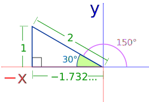
|
Sine |
sin(150°) = 1 / 2 = 0.5 |
|
Cosine |
cos(150°) = −1.732 / 2 = −0.866 |
|
Tangent |
tan(150°) = 1 / −1.732 = −0.577 |
In Quadrant III, sine and cosine are negative:
Example: The sine, cosine and tangent of 210°
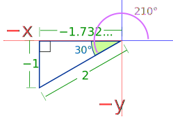
|
Sine |
sin(210°) = −1 / 2 = −0.5 |
|
Cosine |
cos(210°) = −1.732 / 2 = −0.866 |
|
Tangent |
tan(210°) = −1 / −1.732 = 0.577 |
Note: Tangent is positive because dividing a negative by a negative gives a positive.
In Quadrant IV, sine and tangent are negative:
Example: The sine, cosine and tangent of 330°
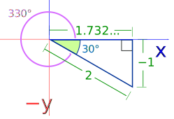
|
Sine |
sin(330°) = −1 / 2 = −0.5 |
|
Cosine |
cos(330°) = 1.732 / 2 = 0.866 |
|
Tangent |
tan(330°) = −1 / 1.732 = −0.577 |
There is a pattern! Look at when Sine Cosine and Tangent are positive ...
- All three of them are positive in Quadrant I
- Sine only is positive in Quadrant II
- Tangent only is positive in Quadrant III
- Cosine only is positive in Quadrant IV
This can be shown even easier by:
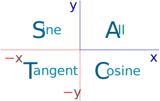
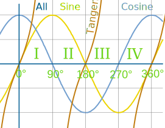
This graph shows "ASTC" also.
Some people like to remember the four letters ASTC by one of these:
- All Students Take Chemistry
- All Students Take Calculus
- All Silly Tom Cats
- All Stations To Central
- Add Sugar To Coffee
Maybe you could make up one of your own. Or just remember ASTC.
Inverse Sin, Cos and Tan
What is the Inverse Sine of 0.5?
sin-1(0.5) = ?
In other words, when y is 0.5 on the graph below, what is the angle?
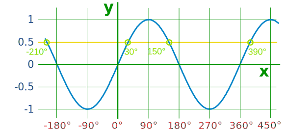
There are many angles where y=0.5
The trouble is: a calculator will only give you one of those values ...
... but there are always two values between 0º and 360º
(and infinitely many beyond):
| First value | Second value | |
| Sine | θ | 180º − θ |
| Cosine | θ | 360º − θ |
| Tangent | θ | θ + 180º |
We can now solve equations for any angle!
Example: Solve sin θ = 0.5
We get the first solution from the calculator = sin-1(0.5) = 30º (it is in Quadrant I)
The next solution is 180º − 30º = 150º (Quadrant II)
Example: Solve cos θ = −0.85
We get the first solution from the calculator = cos-1(−0.85) = 148.2º (Quadrant II)
The other solution is 360º − 148.2º = 211.8º (Quadrant III)
We may need to bring our angle between 0º and 360º by adding or subtracting 360º
Example: Solve tan θ = −1.3
We get the first solution from the calculator = tan-1(−1.3) = −52.4º
This is less than 0º, so we add 360º: −52.4º + 360º = 307.6º (Quadrant IV)
The other solution is −52.4º + 180º = 127.6º (Quadrant II)